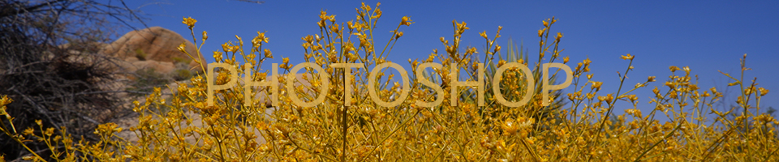

PHOTOSHOP

 I learned useful basic skills in photoshop to feel more confident in my future projects. For this project, I intertwined my
desert ink drawings with natural landscape. I added elements of my ethnic background such as the line drawing on my face of a mountain and a quote from an old folk story.
I learned useful basic skills in photoshop to feel more confident in my future projects. For this project, I intertwined my
desert ink drawings with natural landscape. I added elements of my ethnic background such as the line drawing on my face of a mountain and a quote from an old folk story.
Home|
Photoshop |
Illustrator |
Animation |
InDesign |